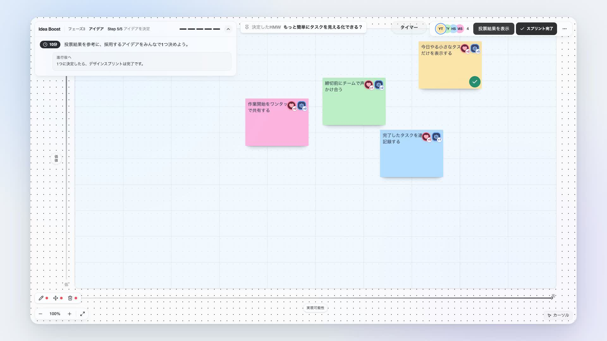
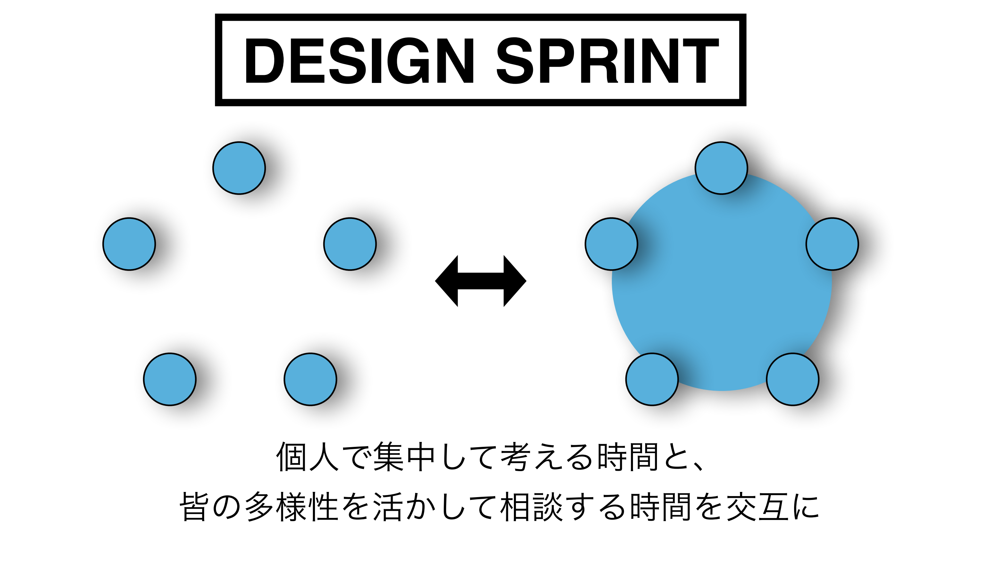
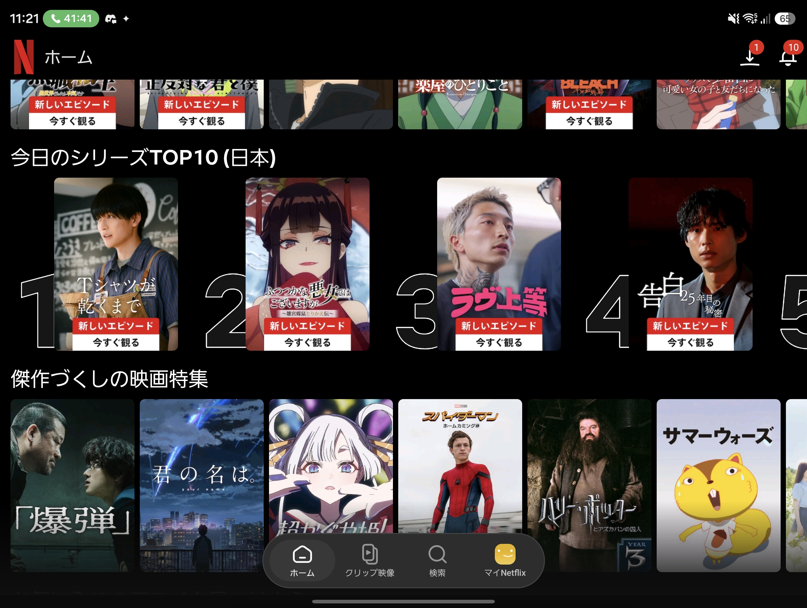
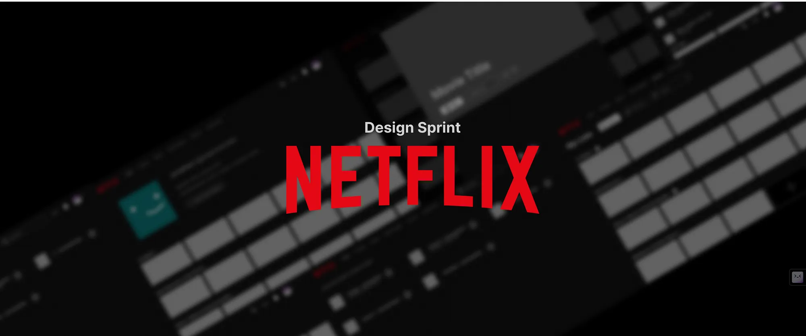

誰のために？
使う人を
思い浮かべる。
Idea Boost. · opening
Idea Boostの価値と体験を紹介する42秒のローンチ動画です。
動画を読み込めませんでした。HTMLと同じフォルダにidea-boost-launch.mp4があるか確認してください。動画ファイルを開く
誰かに求められるアイデアを迷わずに
アイデア出しに
困ったときに。

私は気になります。
使う人を
思い浮かべる。
解くべき課題を
見つける。
考えた案を
確かめる。
必要とされる理由を、使う人の困りごとから考える。
必要とされるアイデアとは、どんなものでしょうか。まず、誰のためのものか。その人は何に困っているか。そして、本当に役立つか。使う人の課題を理解し、考えた案を確かめる。この視点から、今日の話を始めます。この困りごとが、Idea Boostの出発点。
開発チーム自身の経験
私たち開発者も、作っているものが本当にユーザーに価値があるのか、わからなくなっていました。これは、私たち自身が経験した課題です。同じように困っている人が、理由を持って案を出せるようにしたい。そのための手がかりになるのが、デザインスプリントという考え方です。あのGoogleが生み出した方法
新しいアイデアや製品の需要を、
5日間でプロトタイプをつくり、ユーザーテストまで行って、
高速で検証するビジネスフレームワークです。Idea Boostは、この手法をアイデア出しから一案を決めるまでに落とし込んでいます。


ここで、皆さんが知っているNetflixの画面をご覧ください。画面いっぱいに表示したTOP10の体験を思い出してみてください。次のページで、このような身近なサービスとデザインスプリントの関係を紹介します。 画像：ユーザー提供。身近なサービスで考える

紹介記事では、コンテンツを見つける体験の改善に
デザインスプリントを活用したと説明されています。
出典：Mediumの活用事例記事 ／ Netflix公式のTOP10紹介
※ デザインスプリントとの関係は紹介記事の記述。Netflix公式による確認は取れていません。
Idea Boostの進め方 · 課題から一案まで
困りごとを付箋に書き、似たものをまとめる。取り組む課題を一つ選びます。
残るもの：このチームで出た課題選んだ課題を「どうしたら？」に変えて、チームの考える方向をそろえます。
残るもの：このチームで決めた問い案を出し、価値と実現可能性で比べる。投票と対話で一案に絞ります。
残るもの：このチームで選んだアイデア全員で考える → ガイドに沿って進める → 納得して決める
この考え方をプロダクトに落とし込んだのが、課題から一案までの3つのステップです。 最初は課題整理です。全員が自分の困りごとを付箋に書き、似たものをまとめて、チームで取り組む課題を一つ選びます。 次に問いの作成です。選んだ課題を「どうしたら？」という問いに変えることで、全員が同じ方向を考えられるようにします。 最後はアイデアの決定です。問いに対する案を出し、価値と実現可能性で比べ、投票と対話で採用する一案を決めます。 Idea Boostは、画面のガイドに沿ってこの順番を進め、各ステップの成果物を次へ引き継ぎます。01 · 課題整理 / MAP
解くべき課題を決める
02 · 問いの作成
課題をアイデアが生まれる問いに変える
03 · アイデア / SKETCH → DECIDE
問いへの解決策を比べて決める
このチームで出た課題 → このチームで決めた問い → このチームで選んだアイデア。
デモでは、矢印に沿って、課題探しからアイデアが出るまでの進み方をご覧ください。課題整理は、困りごとを書く、共有する、グループ化する、投票する、課題を決める、の5ステップです。ここで残るのは「このチームで出た課題」です。問いの作成は、問いを書く、共有する、投票する、問いを決める、の4ステップです。ここで「このチームで決めた問い」を残します。アイデアは、アイデアを書く、共有・分類する、価値と実現可能性で評価する、投票する、アイデアを決める、の5ステップです。ここで残るのは「このチームで選んだアイデア」です。個人で考え、チームで共有し、比べて決める。この流れを、このあと実際の操作でご覧ください。操作の再現デモ · 2分
ルーム準備から、個人ワーク、共有、投票、問いの作成、アイデア決定までの操作を再現した動画です。
動画を読み込めませんでした。HTMLと同じフォルダにdemo2.mp4があるか確認してください。動画ファイルを開く
私たちの強み · 迷わず進めるワークフロー
Miro・FigJam
自由に並べ、共有する
ChatGPT
問いを広げ、深める
Idea Boost.
進め方を組み込み済みガイドに沿って、誰かの困りごとからアイデアへ
私たちが目指すもの
01 · 利用
アイデア出しに慣れていない学生チームへ。
02 · 検証
全員がアイデアと理由を話せたか。
03 · 改善
迷った場面をもとに、ガイドを見直す。
Idea Boost. アイデアは、もっと自然に。
次の展望は、実際の学生チームで使ってもらい、目指す状態が生まれるかを確かめることです。全員がアイデアを出せたか、その理由を説明できたか、どこで迷ったかを見て、ガイドや進め方を改善していきたいと考えています。誰もが、理由を持ってアイデアを出せるように。エンジニアファーストのIdea Boostです。ありがとうございました。